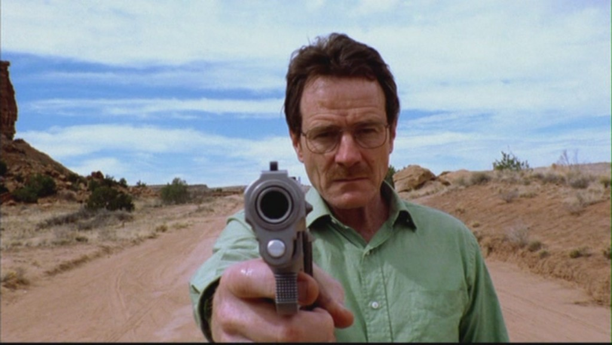

Breaking Bad’s Pilot Has It All, And Yet Has Nothing
November, 2020
As I talked about on the Pilot Study Podcast, the Breaking Bad pilot tells you everything you need to know to watch and understand the series. It gives you Walter White, the down-on-his-luck, spineless high school chemistry teacher who’s sleepwalking his way through life. It gives you the hint of an interest and a talent within him that goes unnoticed and unregarded by everyone around him. It gives you Skyler and Walt Jr., Hank and Marie, Jesse Pinkman and so many other figures who make up his world, with just enough color to get a sense for who they are. It gives you the cancer diagnosis that ignites something in Walt, that causes him to take control of his life. And it gives you the sense of the consequences of that change and that choice, the subtle transformation that sets him on a different trajectory.
But what isn’t present, what’s barely even hinted at in this first installment, is where that slow-burning transformation will take him. That’s the beauty of Breaking Bad, and its devotion to the idea of change embodied in Walt’s speech about chemistry. We see the first chemical reaction here, the catalyst that sends a lowly science teacher down a new path. We see brief sketches of his wife, his brother-in-law, and his new, less-than-reputable business partner. But we can’t see how much these individuals, and our view of them, will shift and flip over the ensuing five seasons of one of television’s all-time great dramas.
This pilot gives you everything you need to dip your toe into the world of Breaking Bad, but only gives the slightest hints as to how deep and how dark the water goes.
Read More
